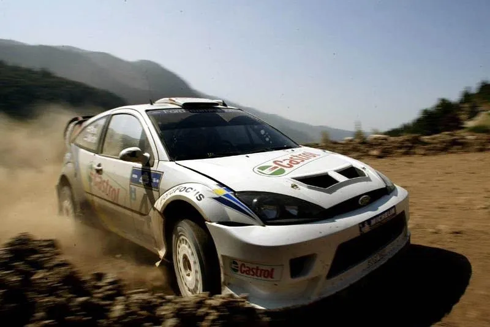
2003: A look back at the best WRC season of all time!
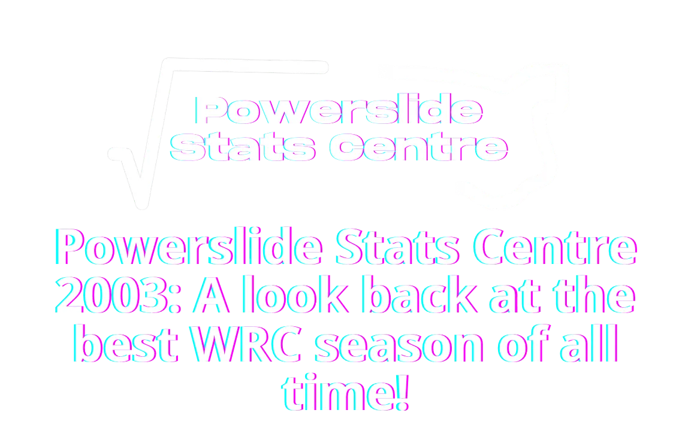
On this day 21 years ago, my favourite WRC season of all time concluded in Wales. Petter Solberg won the 2003 WRC Championship, in one of the best seasons this sport has ever seen. Across 14 rallies we saw 5 different drivers lead the championship, 6 different winners, as well as 11 drivers finish on the podium. Such was the level of competition, that after 13 rounds, 4 drivers headed to Wales Rally GB with a mathematical chance at the championship, with the four drivers separated by just 5 points! To honour this season, I decided to take a deep dive into all those rallies and stages, and see, which drivers were the fastest, which ones were the most reliable, and what were each of the title contenders' strengths.
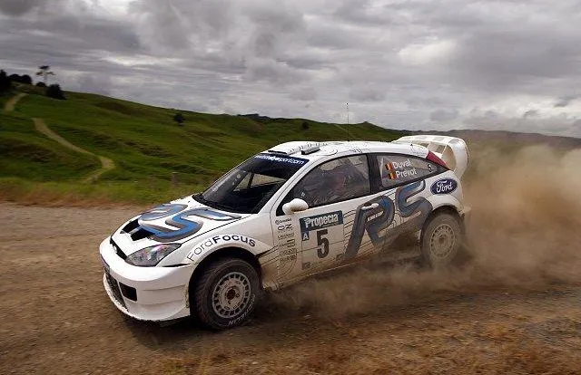
2003 was a great year for the WRC
Picture by Ford Motors
Before we dive in, let's break down how these numbers are determined! There are two key variables: Deficit to Ideal Time (measured in seconds per kilometer) and Percentage of Stages Completed with a Representative Time (expressed as a percentage). The first variable, Deficit to Ideal Time, reflects a driver's speed. It is calculated by comparing the driver's performance to the ideal pace, where the ideal pace is defined as a driver who won all the stages. Essentially, this shows how fast or slow a driver was throughout the season. The second variable, Percentage of Stages Completed with a Representative Time, relates to a driver's reliability. This percentage is based on the number of stages a driver completed with a competitive time relative to the total number of stages in the season, excluding super special stages (SSSs). A non-representative time might occur when a driver faces issues like mechanical problems, punctures, wrong tire choices, or is simply cruising. To determine if a time is non-representative, it is compared to times from either the previous run of the stage or times from the same loop. If the time has a deficit more than 160% of the previous pass or loop average, it is classified as non-representative. When comparing drivers, mechanical DNFs are ignored, but since in this comparison we are talking about the best combination of driver and team, retirements matter and will be counted.
Heading in to Wales Rally GB, the four drivers still within a chance at the championship crown were Richard Burns, Carlos Sainz, Sebastien Loeb and Petter Solberg. However, these will not be the only ones we will be looking at, as Markko Martin and Marcus Gronholm were also in the title fight in the year. The season started, as ever, in Monte Carlo. It was an ideal start to the season for Citroen, with the french brand getting a 1-2-3, with Sebastien Loeb winning his first ever Monte-Carlo Rally. Marcus Gronholm was the only driver who was close to the Citroen's, in fact the Finn was leading the rally, before hitting an icy patch and breaking his wheel. Solberg's rally also came in to an early end, going off the road on Stage 5. Martin fared better, and was in a podium position until the penultimate stage, before Sainz beat him to the last podium position. Burns was behind the Estonian in 5th, but a long way off the leading pair. Rally Sweden was all about Gronholm, with the Finn winning 8 stages, and winning the rally by 50s. Richard Burns was the closest of the title challengers to Gronholm, finishing in 3rd. Martin was behind Burns in 4th. Solberg struggled on the first day, and was outside the Top 10, but managed to finish inside the points. Loeb also finished in the points, but he battled mechanical problems on the first day, and was also first on the road.
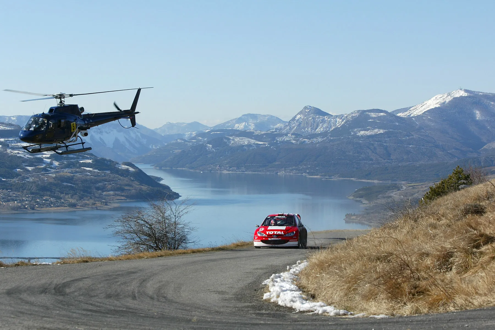
Gronholm may have gone off from the lead in Monte-Carlo, but he won in Sweden!
Picture by Peugeot World Rally Team
After Sweden, the season transitioned to a series of gravel events, beginning with the inaugural Rally Turkey, which kicked off this stretch of rallies. Immediately after four stages, the rally claimed Loeb and Solberg, both retiring from the rally. Marcus Gronholm also suffered in the rough conditions, losing his 206's power-steering early on Day 1. The troubles didn't end there, as Markko Martin also had problems, having his Focus stuck in 2nd gear. That left only Sainz and Burns in contention, with the pair ending the rally in first and second, with Burns suffering from first on the road on the first loop of Friday. New Zealand was again "the Marcus Gronholm Show" with the Peugeot driver winning his second rally of the season by a big margin, so big in fact that not even a roll could cost him the win! Behind him were teammate Richard Burns who had a particularly strong showing on Sunday, and Petter Solberg. Markko Martin was actually Gronholm's biggest challenger, with the Estonian impressing on the 03 Focus debut, before he suffered an engine failure. Argentina was very similar to NZ, only this time, Sainz was in 2nd, and Burns was in 3rd, with Gronholm winning his 3rd rally of the season. Loeb crashed out of the rally on SS20, and Martin again retired, this time from the lead, on SS21. Gronholm and Sainz also had their own issues, with the Finn breaking a wheel on SS9, and Sainz checking in to TC a minute early, and incuring a 1 minute penalty. Solberg also had problems, rolling his Impreza on Day 1, but still managing to finish in the points.
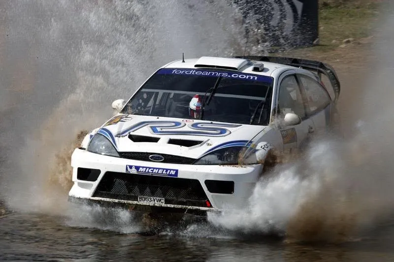
The new Focus was fast, but unreliable
Picture by Ford Company
Two rough gravel rallies brought us to the mid-season break, with the Acropolis Rally and Rally Cyprus being pivotal to the championship fight. Not even his bonnet going up mid-stage could stop Markko Martin from claiming his first win of the season. Sainz was second, with Solberg near the Spaniard in 3rd. Burns was again showing his consistency, finishing in 4th. As for Loeb and Gronholm, the Frenchman suffered an engine failure on the first stage of the rally, and Gronholm retired due to mechanical issues. In Cyprus, Petter Solberg got his first win of the season, winning the rally by 4 minutes! Gronholm, Burns and Martin all retired due to mechanical problems, with the Citroens of Loeb and Sainz finishing 3rd and 5th.
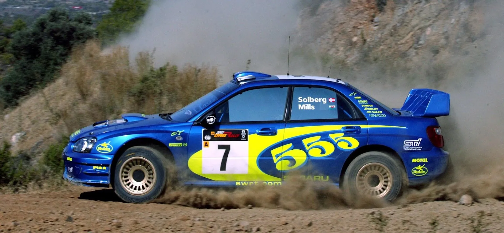
Solberg took his and Subaru's first win of the season in Cyprus
Picture by Subaru World Rally Team
So heading in to the mid season break, here's how every driver looked like pace-wise and reliability-wise.
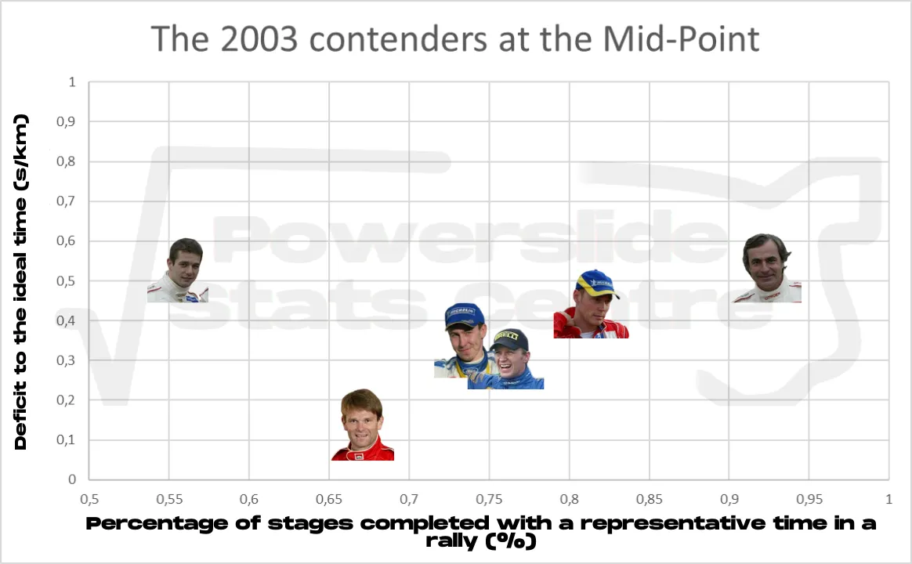
Marcus Gronholm was by far the fastest driver, but he was not the most reliable. In fact his 3 wins were the only events where the Finn had scored points in! Sainz was on the slower end, but very very consistent. Burns was faster than the Spaniard, but less consistent. Solberg and Martin were in similar positions, although it should be noted that the Estonian had more mechanical gremlins than the Norwegian. Loeb is an outlier here, being almost the slowest, and also the least consistent driver, partly because he completed 1 stage in Acropolis and Turkey combined. At the mid season point, the championship standings looked like this:
The second half of the season kicked off in Germany, where Sebastien Loeb went back to winning ways. But it wasn't a dominant win like in Monte Carlo, because Marcus Gronholm was only 3.6s behind the Frenchman at the end of the rally. Neither of them were the fastest driver in this rally though, as Markko Martin who finished 5th was actually the fastest driver, but lost a lot of time on day 1 when he lost his handbrake, and on the final day he had to drive a stage with RWD only. In Finland, Martin and Gronholm were locked in a tight battle for 1st, but the Finn lost a wheel in Ouninpohja and had to retire from his home rally. Markko Martin won his second rally of the season, with Solberg in 2nd, and Burns in 3rd. The pair had a battle for second on Sunday, after Burns lost time on the final stage of Saturday with a collapsed wheel bearing, with Solberg passing him on the final stage of the rally. The two Citroens rounded up the top 5, with Sainz in 4th, and Loeb a long way behind in 5th. Rally Australia was all about the younger generation, with Solberg winning the rally, finishing ahead of Loeb. This was Loeb's first properly fast rally on gravel, showing he wasn't just a tarmac expert. Elsewhere, Gronholm's title chances evaporated, after the Finn retired from the rally due to a very stupid off. Martin was disqualified after he used a rock to hold the spare wheel after the straps holding it broke, and Burns and Sainz finished 3rd and 4th.
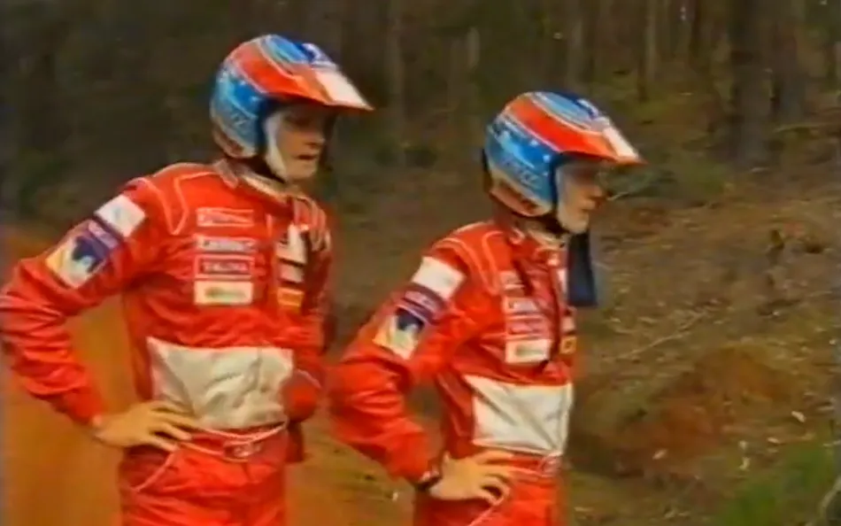
Gronholm and Rautiainen realising they won't be champions in 2003 after their off in Australia.
There would be 3 tarmac rallies before the finale in Wales, and they would be detrimental to the outcome of the championship. In Sanremo, Loeb won again but it wasn't plain sailing. The heavens opened on the final day, and almost everyone but Gilles Panizzi were on dry tyres! Panizzi managed to climb 3 places on the final two stages and finish 2nd ahead of Martin. Further back, Sainz was in 4th and Richard Burns was a long long way back in 7th. Marcus Gronholm's miserable second half of the season continued when he again lost a wheel. Petter Solberg also retired, running out of fuel heading to SS8! In Corsica, Loeb and Martin were again the two fastest drivers, but none of them would finish in the points! Changing weather would again be a factor in this rally, with Loeb and Martin going off in the wet on SS8. Solberg won this rally, getting his first and only win on tarmac, and that was despite him going off in the Shakedown! Sainz got another podium, finishing 2nd, and Marcus Gronholm was 4th. Burns was further back in 8th, having to drive most of Saturday's stages on the wrong tyre. Catalunya was up next, and incredibly, weather would be a factor yet again! Gilles Panizzi won the rally with an inspired tyre choice on the final day of the rally, snatching the win away from Loeb on the final stage! Markko Martin was only 6 tenths of a second behind the Citroen, but it wasn't enough for him to have a mathematical chance at the title heading to the finale. The rain was a gift from the gods from Solberg, who climbed from outside the points to 5th on the final day. By contrast, rain ruined Burns' rally, crashing out on the final day, again being on dry tyres.
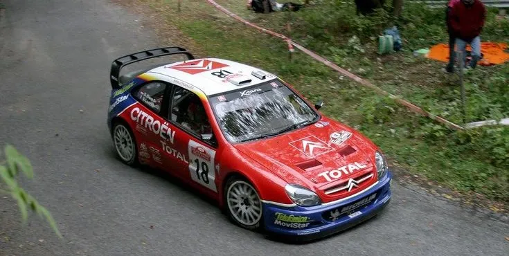
Loeb could have had all 30 points from these 3 rallies, but due to the wrong tyre choices he left with 18!
So heading into Wales, Loeb and Sainz were level on points in the championship, with Petter Solberg just a mere point behind the Citroen pair. Richard Burns was also still within a shot, 5 points behind Loeb and Sainz. Tragically, the 2001 champion would not get to compete in Wales, as he blacked out during the recce, and had to withdraw from the rally. He would be diagnosed with astrocytoma, and sadly pass away 2 years later. The now 3 title challengers would become 2 after SS3, as Carlos Sainz crashed out of the rally. It was now Loeb vs Solberg for the title. The pair went head to head for the rally win, exchanging the lead multiple times throughout day 1, but in the end Solberg came out on top, winning his first and only championship.
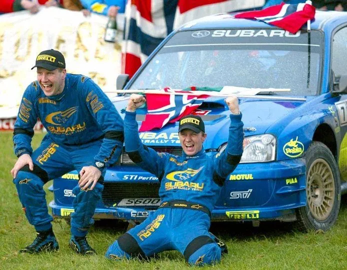
Solberg won the championship in Wales
Picture from Petter's Facebook page
So how did things pan out on the second half of the season?
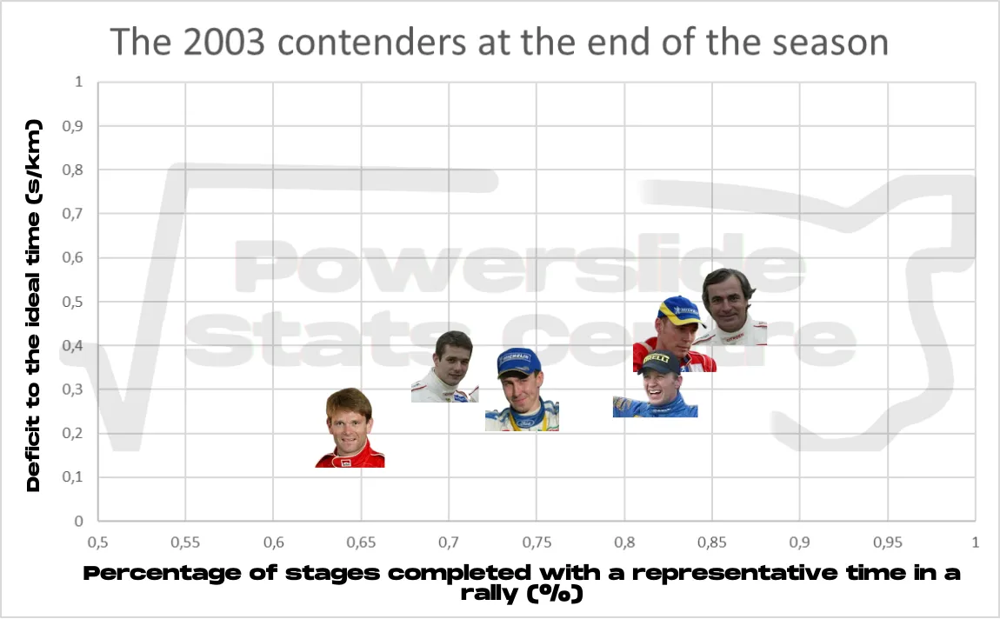
Marcus Gronholm was again the fastest driver, but not with as big of a margin. The Finn also became less consistent on the second half, now being the least consistent out of the six. Loeb improved both his pace and reliability by a lot in the second half. Martin was almost in an identical position compared to the mid season point, whereas Solberg lost a bit of speed but became a lot more reliable. Burns was just as fast, and even became more consistent, whereas Sainz lost some of his consistency on the tarmac heavy second half.
But what about each surface? Well, we can also get some information from these three tables:
As you can see, every surface has it's own different story. All drivers have about the same stages completed on tarmac, with Loeb being the fastest. Martin is second fastest, and then the rest are a considerable distance behind. On rough gravel it's different. Gronholm is by far the fastest, but he is also the least reliable. Solberg has the "best of two worlds", being both fast and reliable, whereas the rest are equally fast amongst themselves, with varying levels of consistency. Fast gravel/snow shows a different story once again. Gronholm is by far the fastest, but his Finland retirement hurts him a lot on the reliability. Martin and Burns are as fast as each other, but the Brit is a lot more consistent, and Solberg is marginally slower, but just as consistent as the Peugeot driver. The two Citroen drivers are further behind, with Loeb beating Sainz in both categories.
So, what have we learnt today? Erm, I don't know actually. It depends on how well versed you were in the 2003 WRC season. I guess some personal takeaways I have are firstly that Markko Martin was a genuine title contender that year, and a lot faster than I remembered, Burns' second half of the year was not as good as the first one partly because he wasn't as good on tarmac and poor tyre choices, and that any of those 6 drivers would have been a worthy champion. If you made it all the way through this very long post, thank you, I hope it was as fun to read as it was for me to write!


Comments